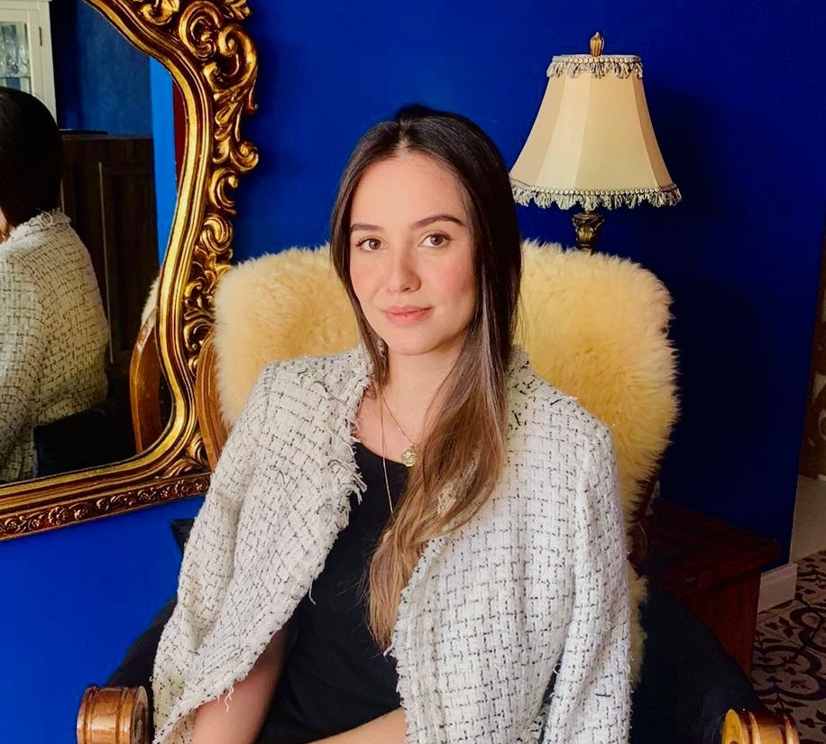

Atendimento psicológico para adultos e idosos — online ou presencial em Curitiba. Um espaço de escuta real, sem roteiro, sem pressa.
Vagas limitadas — agenda reduzida

Psicanálise
Curitiba · Online
Sou Bruna, psicóloga formada pela UNISOCIESC e especialista em Saúde Pública com ênfase em Saúde da Família.
Há mais de 6 anos trabalhando clinicamente, aprendi que as pessoas geralmente não precisam de alguém com respostas prontas — precisam de alguém que aguente ficar no desconforto junto, sem tentar resolver tudo rápido demais.
Minha formação contínua em psicanálise — que envolve estudo, supervisão e análise pessoal — moldou uma prática que respeita o ritmo de cada um. Não existe uma fórmula, um protocolo ou um número certo de sessões — existe o que aparece quando há espaço para aparecer.
Atualmente curso especialização em Desenvolvimento Infantil, aprofundando a compreensão sobre como as experiências dos primeiros anos de vida seguem vivas e atuantes na vida adulta — algo que aparece frequentemente nas sessões com adultos.
A palavra é o
instrumento
da cura.
Sigmund Freud
O que você não consegue dizer em voz alta costuma ser exatamente o que mais importa.
Trabalho pela via da psicanálise, com formação contínua que envolve estudo, supervisão e análise pessoal. A associação livre é a base das sessões. Isso significa que não existe assunto certo ou errado, momento oportuno ou inadequado — você pode falar sobre o que vier, na ordem que vier.
É nesse movimento — aparentemente simples, mas raramente fácil — que algo novo pode surgir. Não porque eu vou interpretar tudo o que você diz, mas porque falar livremente para alguém que escuta sem julgamento já é, por si só, um trabalho profundo.
Cada pessoa chega com uma história diferente. Abaixo estão alguns dos temas que aparecem com mais frequência — mas o espaço terapêutico é amplo o suficiente para o que não está na lista.
Quando a cabeça não para e o corpo sente antes de você entender o porquê.
Quando a vontade some e a distância entre você e a sua vida aumenta.
Padrões que se repetem. Vínculos que pesam. Histórias que precisam ser revisitadas.
Para quem sente que existe algo mais, mas ainda não sabe exatamente o quê.
Você envia uma mensagem no WhatsApp. Sem formulários, sem burocracia — só uma conversa para entendermos se faz sentido trabalharmos juntas.
Online, de onde você estiver, ou presencial em Curitiba. Definimos juntas o que funciona melhor para a sua rotina.
Sem expectativas rígidas. A primeira sessão existe para você falar o que te trouxe até aqui — e para sentir se esse é o espaço certo para você.
Pela primeira mensagem. Não é preciso saber explicar direito o que está sentindo — isso é parte do trabalho. O suficiente é perceber que algo precisa de atenção.
Por videochamada, em plataforma segura. Você precisa de um dispositivo com câmera e um lugar onde se sinta à vontade para falar. Muita gente descobre que prefere o online exatamente por isso.
Os valores são informados diretamente pelo WhatsApp, de forma personalizada. O CFP não permite divulgação de honorários em canais públicos.
Geralmente uma vez por semana, o que permite continuidade e profundidade no trabalho. Mas isso é algo que definimos juntas, de acordo com o seu momento.
Não existe momento perfeito para começar. Mas se você chegou até aqui, talvez esse seja o sinal que estava esperando.
O primeiro passo é simples: uma mensagem.